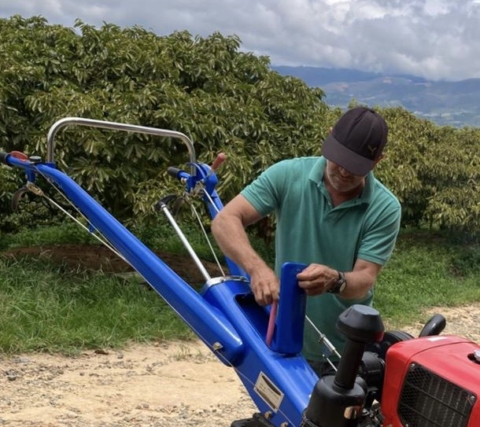
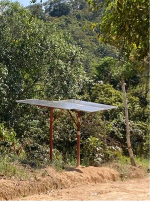

CAMARAS DE SEGURIDAD.
"Las cámaras de seguridad con luz solar funcionan captando la energía del sol mediante paneles
solares que convierten la luz en electricidad, almacenándola en baterías para alimentar la cámara de forma
continua, incluso de noche o en días nublados. Al no requerir conexión eléctrica ni cableado, son ideales para
lugares remotos y contribuyen a reducir costos y cuidar el medio ambiente. Con funciones como visión nocturna y
alertas en tiempo real, ofrecen una vigilancia eficiente, autónoma y sostenible."
Carlos Villafrades

Coloca Administrador de la Finca Villamaría.

ALUMBRADO PÚBLICO EN CARRETERA.
"El alumbrado público con energía solar para una finca utiliza paneles solares instalados en el
terreno para captar energía durante el día, que se almacena en baterías. Por la noche, esta energía alimenta
luminarias LED distribuidas estratégicamente en caminos, áreas de trabajo y zonas comunes de la finca. Es un
sistema autónomo, ecológico y económico..."
Jairo Villafrades
Residente de la Finca Villamaría.

VIVIENDA DE EMPLEADOS.
"Antes no teníamos luz por la noche y usábamos lámparas precarias. Con los paneles solares ahora
tenemos luz segura para nuestras casas, podemos cargar celulares, usar ventiladores y conservar alimentos..."
Dimas
 Empleado de la Finca Villamaría.
Empleado de la Finca Villamaría.
ALUMBRADO CASA/QUIOSCO.
"En nuestra casa usamos energía solar para iluminar todas las habitaciones sin depender de la
red eléctrica, lo que nos ha ayudado a reducir costos y tener luz segura y constante..."
Fabio Villafrades
Líder de la Finca Villamaría.